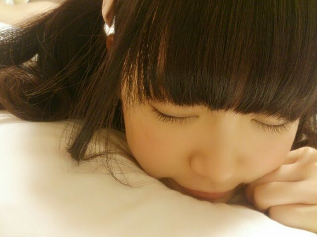
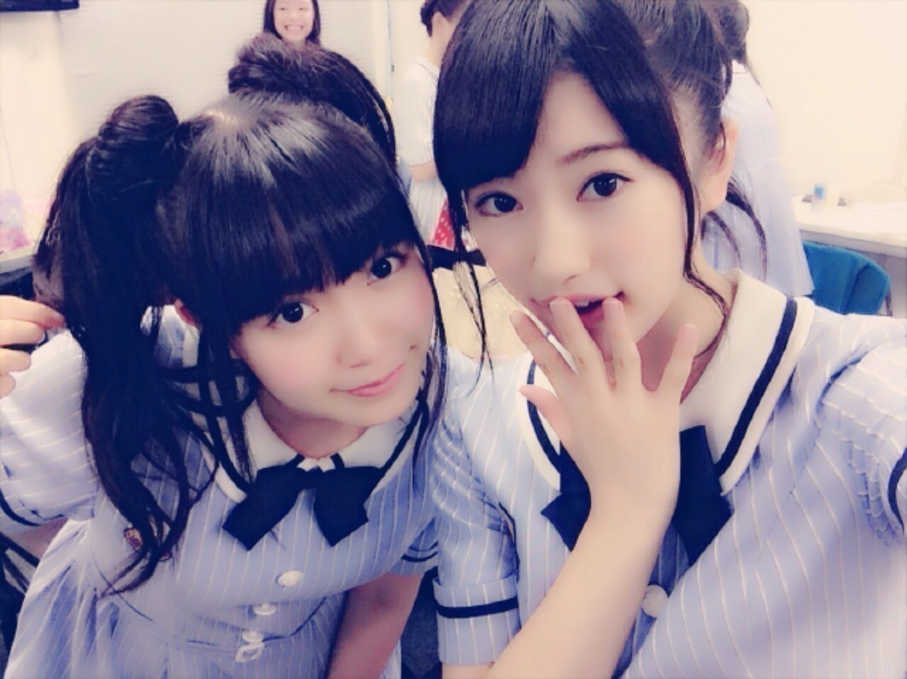
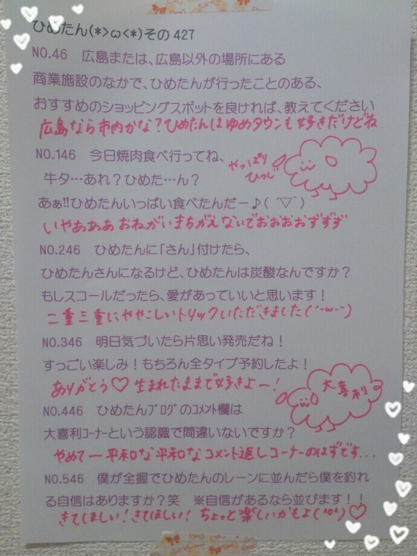
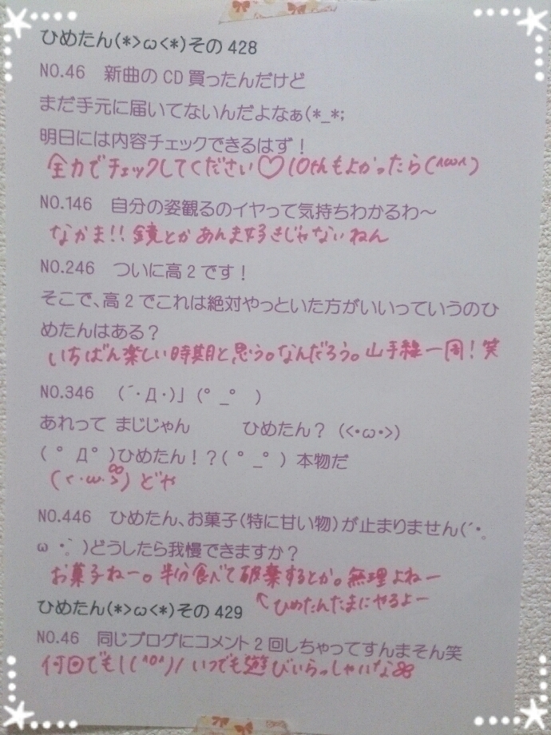

| 2014/08 14 Thu | ひめたん-OoO-その469 |
にゃん

にゃんにゃ

ひめたんです！
あなたを待ってる～？
＼ひめちまってるー♡／

それでは全国ツアーのスタートが
今週末から始まるとゆーことで
きゅんきゅん王国のみなさんの
ライブの準備をお手伝いするべく
おさらいタイム(＊´ω`＊)
ひめたん僕に私に気づいて！というあなたは
ぴんく のサイリウム
ひめたん タオル
ひめたん うちわ
ひめたん Tシャツ
とかやってみてくれたら嬉しいなあ
必ずキャッチするよ♡
あとはおにゃのこちゃんたちは
ついんてーるとかりぼんとか挑戦してくれたら
もっと嬉しくなっちゃう ⌒ﾟ( ･ᴗ･ )ﾟ⌒
ぼーいずのみんなは
ついんてーるしてもかわいいと思うけど
蝶ネクタイとかかわいいよね＊
そんな感じで女子力、いいえ
きゅんきゅん 力！！！
高めでおなしゃす♡きゃぴ
ひめを思う気持ちと
あとは元気を持って会場に来てくださいね
しっかり寝てきてねー体力もたないよー
超絶久々に使ったひめたん絵文字

みんなも使っていーよー♪
さて、前回の乃木ののは
中田花奈ちゃん
伊藤かりんちゃん でした☆
アイドルヲタクと乃木坂ヲタク！
実際そんなに
アイドルさんのお話しなかったかも
でも楽しかったです
かりんちゃんは初の乃木ののとゆことでしたが
なんだろ貫禄があったよね( ´ ▽ ` )
かなりんもトークが面白いから
なんかずーっとお喋りが止まんなかった！
知的な3人だったね～もちろんひめたんも含め♡
次回もお楽しみにっ

のぎ天#6予告編公開されました
Japan Expo密着＊
みんな頑張ってたよー
もちろんレポする私たちも頑張ったよ
観てね( ^O^ )

 ひめたんの
ひめたんの
えくぼツンツンしたくなるの・・・
何でだろう？？？
( '-' )ノ)`-' )め
扇風機が好きなんだけど
最初の手の振りが難しいです。
コツを教えてください。
さいき「ん・ちょっ・と・～」の歌詞の時に
手でL・O・V・Eを作るんだよー♪
扇風機のサビは細かい手の動きが多いから
PVやライブDVDをいっぱい観てみてね
あすかりんがひめたんを
ビジネスパートナーって言ってるけど、
どういうこと？？
文字どおりだよねーあすかりん
びじね～す\( ˆoˆ)/\(ˆoˆ )/♡
ひめたんのいいところは、
アホっぽいのに実は頭がいいところだと思う！
ありがとうよく言われる( ¯•ω•¯ )黙れ
僕が「アイドルになりたい」というと
大人は爆笑します。
何で大人は差別するのですか？
ひめたんビームを見て僕が(笑)ってなるのと
同じですか？
だーかーら( ¯•ω•¯ )黙れ
ひめたんの日記の
コメント欄下２ケタに46を踏んだ方へ
手書きでコメ返するコーナー
＼ ひめたん46 ／



いつもたくさんのコメント
ありがとうございます
ライブのときどうやったら
ひめたん気づいてくれるかな？ってひとが
いっぱいいたからまとめてみたよ♡
きゅんきゅん王国のみなさんは
絶対ひとりひとり見つける！
ひめたんのことも見つけてねー！
ライブのリハとか10thとかで
ばたばたしてるけど
車酔いと戦いながら移動中の車で読んでるよ(*'v'*)
あとお風呂とか、寝る前とか
何もやってないときはコメント読んでるの
みなさんのおかげでプライベートもアイドル♡
次回乃木どこ出ます( ˘ω˘ )
予告みてくれた方は
わかるかなーと思うけど
みーんな私服回です！
予告のねねちゃんが可愛くてひめたんもう満足。
それから、
かなりんブログのTIFレポみたけど
SPL∞ASHみてくれたんだね！
かなりんありがとう♡
みんなほんとにお疲れさまでした～＊
夜みんなと久々に会えて
ひめたんも頑張らなきゃって
改めて感じました！
(＊´・ω・＊)
コメント(707)
2014/08/14 00:00